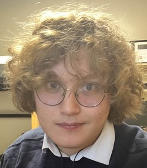

Mateo Csernecky
Student Journalist
📍 Harrisonburg, Virginia
📞 (703)-725-4359
✉️ mscsernecky@gmail.com
Objective
To bring to light my abilities and experience within the working world to potential employers within the journalism or translating industry. Highlighting my abilities and experience as a leader, translator, and writer.
Experience
FCPS PreK Assistant
Fairfax County Public Schools, Fairfax County
Jan 2023 – Present
- Helped answer phone calls and attend to families at the front desk.
- Helped English and Spanish speaking families sign up for the FCPS PreK Program.
- Helped collect and review important documents from families in the application process.
Support Team Member
Chick-Fil-A, Gainesville
Aug 2021 – Present
- Helped oversee tha other team members maintain a high customer satisfaction rate.
- Expedite and delivered food to customers dining and in the drive-thru.
- Helped to prepare and bag food for customers dining and in the drive=thru.
The Breeze Contributing Writer
The Breeze Culture and News
Aug 2022 – Feb 2024
- Recapped and covered events around and in Harrisonburg and JMU.
- Covered the JMU Student Goverment Association beat twice.
- Collaborated with editors to prepare stories for The Breeze.
Skills
- Translating: Interpreting English to Spanish, and Spanish to English.
- Teamwork: Able to work and collaborate well with others with clear communication and problem solving skills in order to reach a common goal.
- Leadership: Understanding what it takes to oversee and aid a group with expertise in order for them to reach a common goal under view.
- Organization: Ability to maintain a calm and clear environment with a knowledgable understanding of the tasks that are expected of one.
- Problem Solving: Ability to persist and find an inventive solution to any problems encountered while working towards a goal.
Education
High School Diploma
Patriot High School, Nokesville
Graduated: 2022
Currently Studying Bachelor of Arts
James Madison University, Harrisonburg
Graduation Date: 2026
Certifications